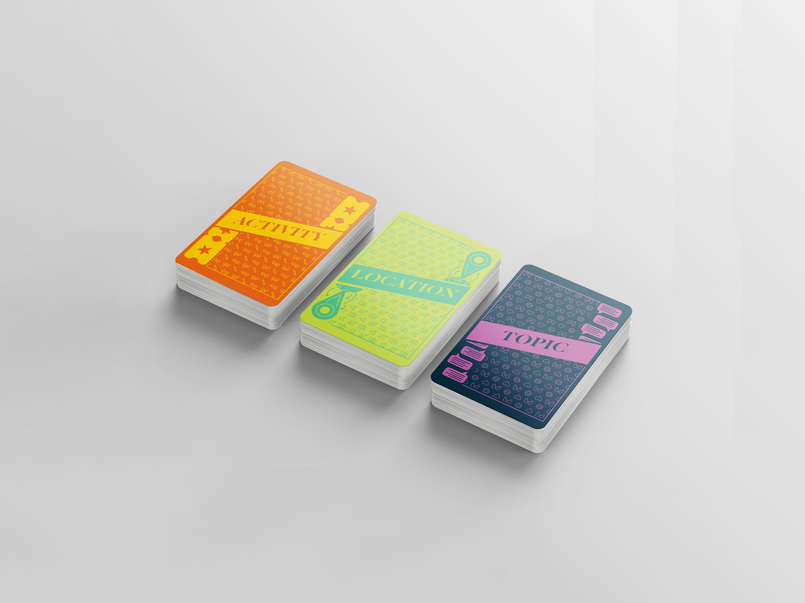
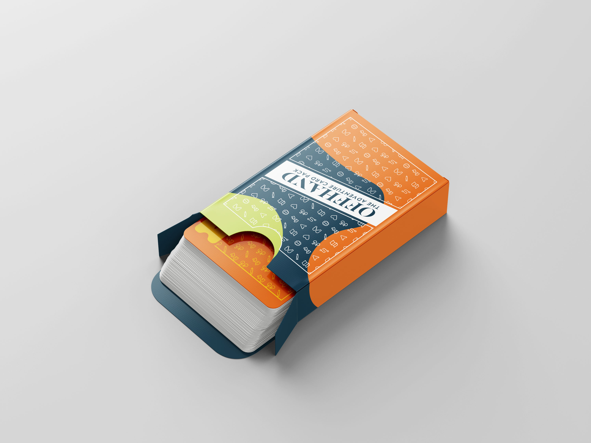
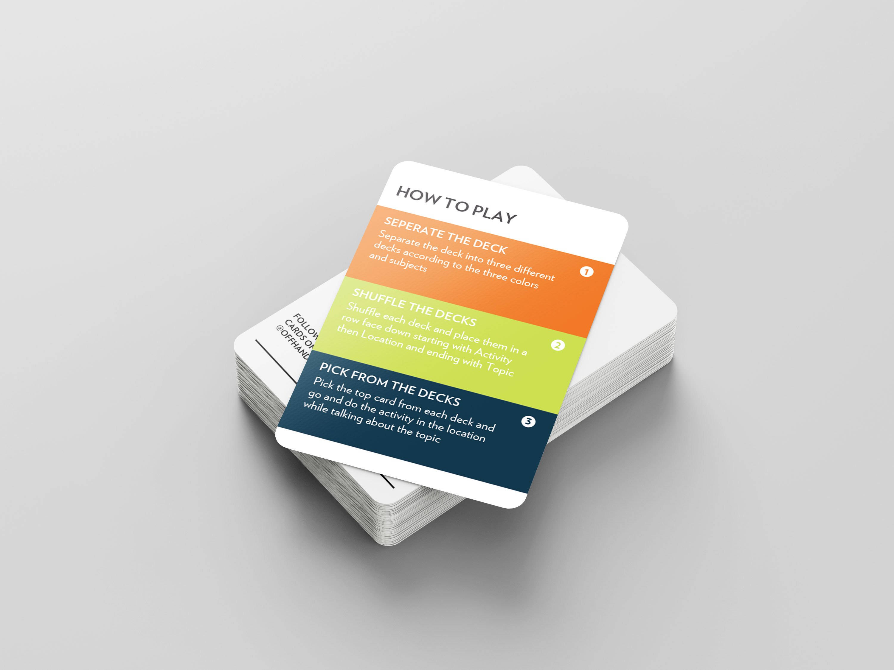
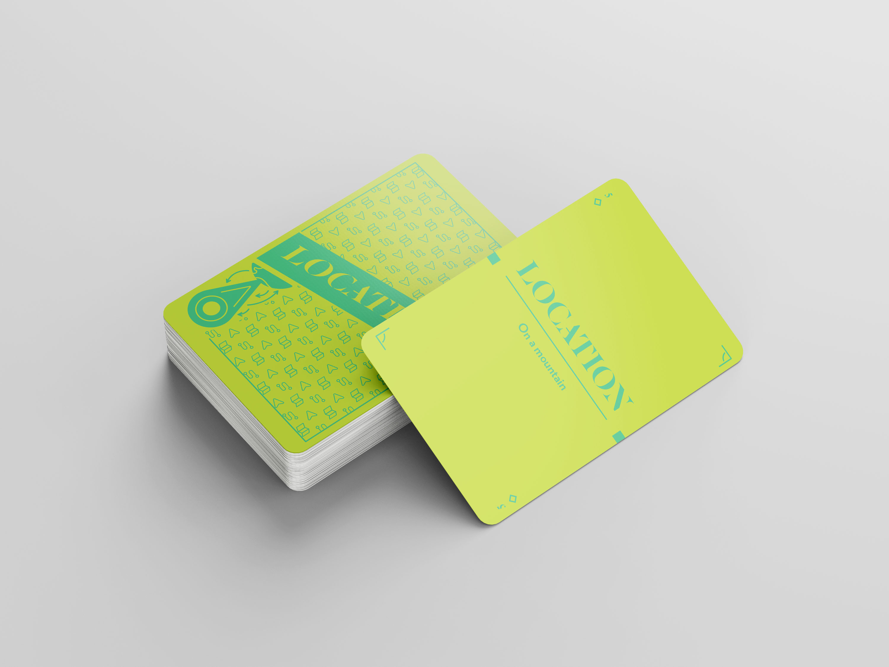
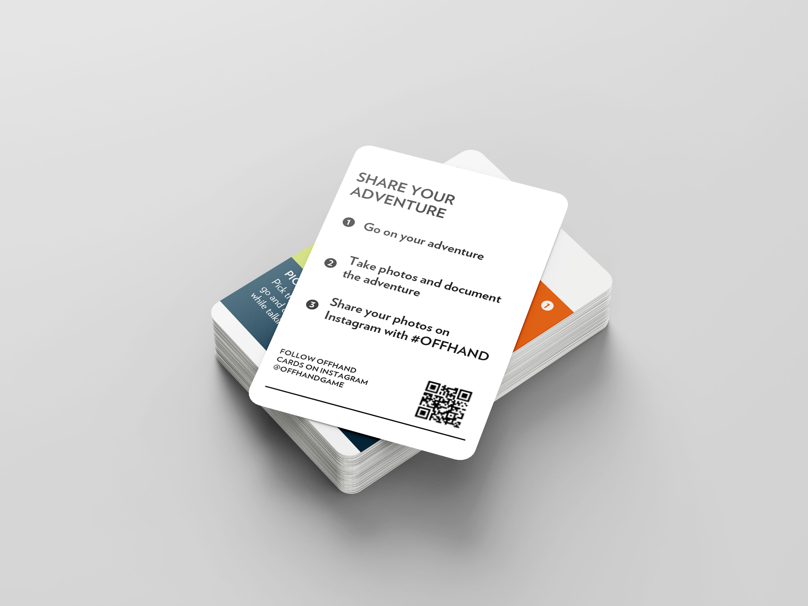
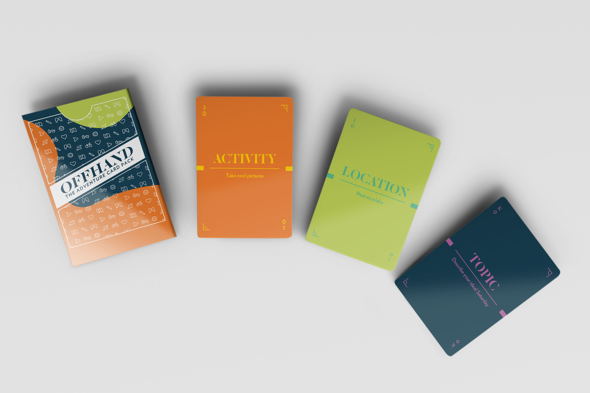

OFFHAND
"Offhand, Adventure Cards" address South Carolina's low well-being rankings by utilizing a deck of 52 cards focused on health, wellness, and community. The game encourages spontaneous adventures by combining cards with activities, places, and topics. Research highlighted the importance of minimizing social isolation. The cards' colors reflect the associated emotions, and user testing led to adjustments, ensuring an engaging final product that promotes well-being through shared experiences.
Skills Used:
Lofi PrototypingIcon DesignIllustrationTools Used:
IllustratorPhotoshop






Brief
Well-being is the state of being comfortable, healthy, or happy. Every year, Gallup Healthways examines the well-being of each state. South Carolina consistently ranks near the bottom. I was tasked with designing a set of cards that helped improve the well-being of South Carolina through the specific areas of health & wellness and community. The deck needed to have 52 cards and packaging. The cards needed to be 2.48” x 3.46” with a 1/8th inch bleed. The packaging minimally needed a flip top and to be custom designed.
Research
In my research, I looked at several areas of health and wellness. I researched both mental and physical health. Under mental health, I examined anxiety, burnout, depression, social isolation and loneliness, and stress. On the side of physical health, I explored exercise and nutrition. I also examined ways to improve community. From my investigation, I discovered that playing games, asking questions, having quality time, honest communication, people skills, respect, and positivity are all ways to create supportive relationships. I also research different kinds of card faces, backs, and boxes. I also compiled several different kinds of simple symbols related to health, wellness, and community.
Ideation
One area of health and wellness that stuck out to me was social isolation and loneliness. This was significant to me because so many other areas of mental and physical health stem from isolation and loneliness. This lead me to focus on ways to minimize loneliness. I looked back at my life and examined the times when my relationships with those around me grew the most. The commonality between the moments was that they all stemmed from spontaneous adventures. However, it is difficult to facilitate these kinds of adventures. So I began ideating ways to I could design a deck of cards that helped encourage these kinds of adventures. I landed on a game that involved three decks of cards. The first deck would have cards with various activities. The second deck would have cards with different places. The third deck would have cards with diverse topics. I wanted the colors of the cards to reflect the feeling their subject created. I also wanted the colors to have a modern spin on the traditional designs for playing cards.
Skteching
I focused heavily on creating a successful design for the back of each section of the cards. I also made sketched out various symbols that related to the subjects of each deck. I also made several sketches for the composition of the front of the card. The composition was very important because the actual content was so simple and minimal.
Initial Interation
My testing revealed that the symbol for the brain was often misread. One of my concerns was that the game would be too spontaneous and that people would not want to do the awkward and unusual things the game might ask them to do. However, people seem to like this feature so I decided to maintain it.
Final Result
One area of health and wellness that stuck out to me was social isolation and loneliness. This was significant to me because so many other areas of mental and physical health stem from isolation and loneliness. This lead me to focus on ways to minimize loneliness. I looked back at my life and examined the times when my relationships with those around me grew the most. The commonality between the moments was that they all stemmed from spontaneous adventures. However, it is difficult to facilitate these kinds of adventures. So I began ideating ways to I could design a deck of cards that helped encourage these kinds of adventures. I landed on a game that involved three decks of cards. The first deck would have cards with various activities. The second deck would have cards with different places. The third deck would have cards with diverse topics. I wanted the colors of the cards to reflect the feeling their subject created. I also wanted the colors to have a modern spin on the traditional designs for playing cards.